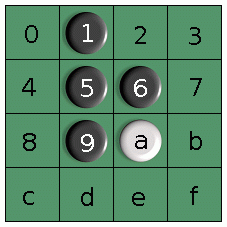

Artificial Intelligence
You are here: > AI > Othello 4x4
Solving a board game.
Othello is a simple board game. It is possible to 'solve' the game on a small 4x4 board using simple game tree search in less than a second on a current machine.
Solution of Othello 4x4
I wrote a simple solver for the 4x4 Othello game in C++, using Qt (cross-platform development tools and libraries). The solver is about 200 lines of code. It does not contain any special optimizations.
The result is a win for white, i.e. the second player, with 8 disks more than black. There are 8 variations of the best game:

> 4 0 1 8 f 2 c 7 3 b
| |
| 2 f 8 3 d c e
|
1 0 4 8 f 2 c 7 3 b
| |
| 2 f 8 3 d c e
|
e f b d 0 7 c 2 3 1
| |
| 7 0 d 3 8 c 4
|
b f e d 0 7 c 2 3 1
|
7 0 d 3 8 c 4
References
- Excellent PhD thesis (pdf) on game tree search
- Overview of games that have been 'solved' (@ wikipedia)
- Source code (.tar.bz2) of the 4x4 solver, written in C++ using Qt.